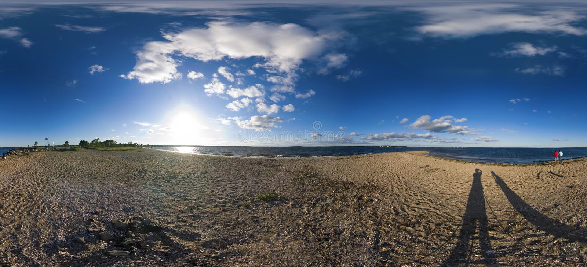
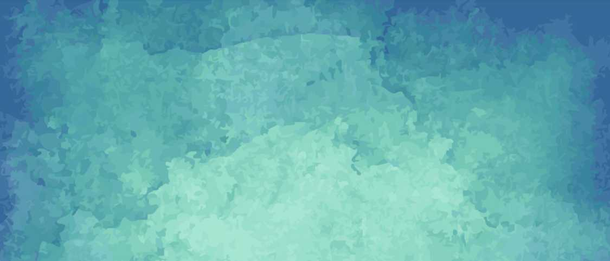

<!DOCTYPE html>

<html>
 		<script src="../aframe/aframe.min.js"></script>
		<script src="../ar/aframe-ar.js"></script>
  		<a-scene embedded arjs>
			<a-assets>
					
					
					<!--<video id="tsunami" autoplay loop="true" src="../assets/videoplayback.mp4"> </video>-->
					<video id="birds" autoplay loop="true" src="../assets/birds.mp4"> </video>
					 <a-asset-item id="tree" src="../assets/tree/scene.gltf"></a-asset-item>
			</a-assets>
		 			<!--<a-sky color="white"></a-sky>-->
					<!--<a-videosphere src="#tsunami"></a-videosphere>-->
			<!--<a-nft type="nft" url="../assets/cat_real">-->
			<a-marker preset="hiro">
				<a-entity rotation="-90 0 0" scale="0.2 0.2 0.2">		
					<a-video src="#birds" width="16" height="9" position="0 5 -20"></a-video>
					<a-entity light="type: hemisphere; color: #ff00ff; groundColor: #aaa; intensity: 2"></a-entity>
					<a-gltf-model src="#tree" position="0 0 -15" scale="0.01 0.01 0.01"></a-gltf-model>
					<a-torus position="-2 1 -5" color="green" radius="1.2" src="../assets/HIRO.jpg"></a-torus>
					<a-plane "width="7" height="7" rotation="-55 0 0" position="-2 -2 -5" color="purple"></a-plane>
					<a-cylinder color="yellow" height="2" radius="0.05" position="-2 -1 -5"></a-cylinder>
					<a-cylinder color="blue" height="2" radius="0.05" position="-3 -1 -5"></a-cylinder>
					<a-torus-knot color="orange" radius="1.2" position="-3 1 -5"></a-torus-knot>
					<a-plane width="9" height="2" position="3 1 -9" src="#plant" color="yellow"></a-plane>
					<a-text value="Welcome to browser's VR" color="black" width="10" position="-0.5 1 -6"></a-text>
				</a-entity>
			<!--</a-nft>-->
			</a-marker>
	 </a-scene>
</html> 
